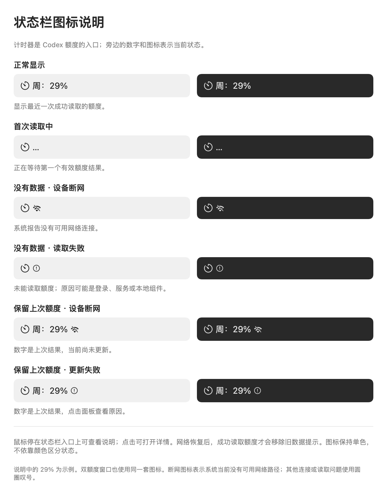

额度与状态，看得明白。
从第一次登录到辨认状态栏图标，这里解答使用中常见的问题。
常见问题
打开后找不到窗口？
手动打开软件会显示额度窗口。关闭窗口后，仍可点击屏幕顶部的计时器图标或额度百分比查看额度，也可以再次打开应用来恢复窗口。登录自启时在菜单栏运行。
怎样开始使用？
点击“使用 ChatGPT 登录”，在 OpenAI 官方网页完成登录后返回软件。需要可访问 Codex 的账号，不用另装 Codex 客户端。首次读取可能需要一些时间。
不登录可以先看看吗？
可以。未登录面板点击“查看演示”；已登录时从“更多”进入。演示会标注“样例数据”，提供单窗口与双窗口示例。点击“返回登录”或“返回我的额度”结束演示。
为什么我只看到一种额度？
软件按账号实际返回的信息显示。只返回一个窗口时，不会补出另一个窗口。切换“6 小时／24 小时／7 天”改变的是历史查看范围，不改变账号的额度规则。
为什么读数没有马上变化？
软件自动刷新，也可以点击“刷新”。它不是逐秒同步的用量计费工具。出现异常标记时，百分比可能是上次成功的结果；把鼠标停在菜单栏入口，可查看最近成功读取时间。
断网图标和叹号有什么区别？
带斜杠的无线信号表示系统报告没有可用网络；圆圈叹号表示读取失败，可能涉及登录、服务、代理连接或本地组件。叹号不一定代表断网。请打开面板查看具体提示。
历史有空白或虚线，是不是丢数据了？
历史只包含本机已记录的样本。软件未运行、休眠或没有成功读取时，无法补回完整历史。虚线用于连接部分不连续的读数，不表示软件已经确认发生额度重置。曲线经过平滑处理，适合观察趋势。
能帮我增加额度或者立即重置吗？
不能。软件只查看服务返回的额度与重置时间，不提供购买额度或立即重置功能。
怎样开启或关闭登录自启？
打开“更多”，调整“登录时自动启动”。首次提示需要你自己选择开启。如果 macOS 要求批准，请按软件提示打开系统设置。关闭后，软件不会自行重新开启。
怎样清除历史或退出账号？
在“更多”里选择“清除历史”并确认，只清除曲线记录。选择“退出账号”并确认，成功退出后会清除本应用登录状态及曲线历史；不等于删除所有组件缓存，也不影响其他 Codex 应用的登录。
反馈问题时，需要提供什么？
请提供软件版本、macOS 版本、发生时间、操作步骤和面板提示。截图前遮住邮箱等个人信息；不要发送密码、验证码、登录凭据文件或完整认证日志。
状态栏图标说明
29% 为示例。没有数据与剩余 0% 是两种不同状态。


联系支持
fatimchuang53@gmail.com。请附上版本、操作步骤和问题提示。